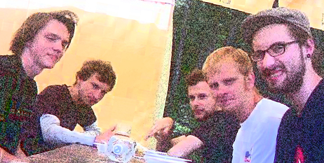

 Apie mus
Arklio Galia tai yra tokie pajūrio estrados grandai, kurie susikūrė prieš gerus penkis metus ir uždirba galybę pinigų. Tai būtų:
Vidmantas Aškinis - vokalas, gitara, lūpinė armonikėlė
Tautvydas Augustinas - gitara
Tomas Lučiūnas - saksofonas, perkusija
Žilvinas Jagėla - bosinė gitara
Marius Juknevičius - būgnai
Milda Žemaitytė - atstovė kultūrai.
Telefonas pasiteiravimui +37061064158, elektrinis laiškas arkliogalia@walla.com